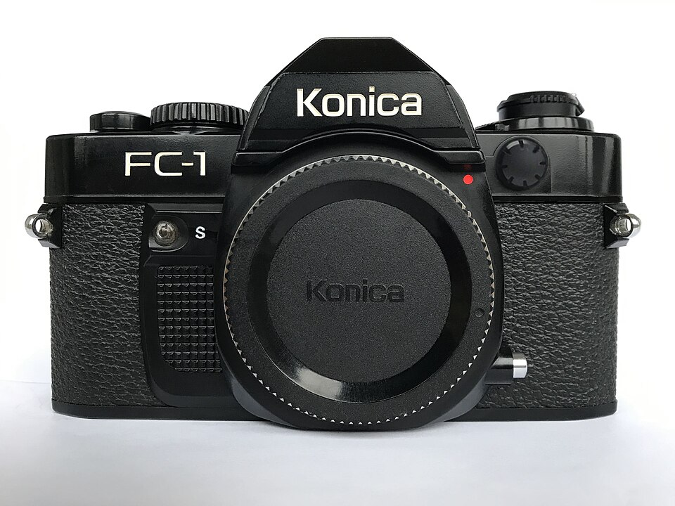

器材
党
全部器材
产品年表
名词百科
榜单
器材库
> 胶片单反相机 > FC-1

图片：
Wikimedia Commons
· VotaliFdalV · CC BY-SA 4.0
柯尼卡
FC-1
分类
胶片单反相机
点评
0 条
图片
0 张
评测
0 篇
Konica FC-1是于1980年推出的，是1979年推出的FS-1的姊妹机，主要区别是没有内置电动卷片器，但可以配用F型卷片器（过片速度为2fps）。
产品类型
胶片单反相机
综合评分
暂无评分
无忌评测
暂无评测
规格参数
网友点评
(0)
产品图 / 样片
(0)
评测文章
(0)
规格总览
产品类型
手动对焦胶片单反相机
发布日期
1980
厂家推荐价格
42,100.00 （日元）
镜头卡口
Konica AR
停产
是
取景规格
取景器
眼平五棱取景器
取景范围
92%
取景放大倍率
0.81X倍
取景器信息
推荐光圈设定，自动光圈大小，暴光不足和暴光过度范围以及手动模式警告。
曝光控制
测光范围
EV 0~19 (ISO 100)EV
快门
快门速度
2~1/1000s
闪光同步速度
专用电子闪光灯为1/100s，普通闪光灯最高为1/60秒。
B门
有
外接闪光灯
PC插孔
有
外观
尺寸
140 x 89 x 45mm
重量
529g
该产品暂无存档的网友点评
该产品暂无存档的产品图
评测 / 相关文章
该产品暂无存档的评测文章